Edit[ > Player | BigBlock ] -> [ > Player | > BigBlock ]
[ Moving BigBlock | BigBlock ] -> [ Moving BigBlock | Moving BigBlock ]To the naked eye it will look splendid:

but upon closer inspection it will reveal itself to be rather a flimsy construction:
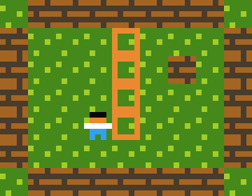
There are many different ways to solve this, depending on what your needs are. I'm going to approach the cases from simplest to most complex. For the purpose of illustration I'll be focussing on multiban style rules - where you can push objects, and the objects can furthermore push eachother.
WARNING: Here be a rabbit hole - there are many approaches of increasing complexity, depending on what you want to achieve. I'd strongly advise to not read down any further into this document than you need to. This topic starts out fun but at its deepest extents is exceedingly delicate, and more akin to a research-subject than something of practical utility. This document was originally just a description of the RIGID keyword, but owing to its complexity/it being overkill in most situations, it ended up being a catalogue of helpful ways not to use it.
SO, let's start are catalogue of cases:
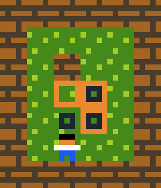
This is the easiest. You just push everything, and if one crate can't be pushed, you cancel everything:
Edit[ > Player | Crate ] -> [ > Player | > Crate ]
[ > Crate ] [ stationary Crate ] -> [ > Crate ] [ > Crate ]
[ > Crate | Wall ] -> cancel

If you want to have several objects at once, you can do something like the following:
Edit[ > Player | Box ] -> [ > Player | > Box ]
startloop
(Propagate movements through crates of different types.)
[ moving Box1 | Box1 ] -> [ moving Box1 | moving Box1 ]
[ moving Box2 | Box2 ] -> [ moving Box2 | moving Box2 ]
[ moving Box3 | Box3 ] -> [ moving Box3 | moving Box3 ]
[ moving Box4 | Box4 ] -> [ moving Box4 | moving Box4 ]
(Extend the movements between crates of different types.)
[ > Box | Box ] -> [ > Box | > Box ]
endloop
(Just cancel the whole turn if something can't move.)
[ > Box | Wall ] -> cancelNote that this can't be extended to having multiple players because if one player is blocked, the whole turn is cancelled.
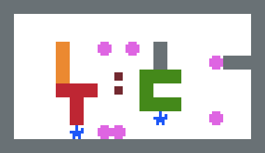
If we have many characters that want simultaneously to push several objects, but some may succeed and some may not, what do we do? Well, it's actually not so finnicky (at least if the characters are all trying to move in the same direction) - we do a three stage process:
(Checking this example in the visual debugger is strongly recommended).
Edit( 1. Propagate movements forward )
[ > Mover | Movable ] -> [ > Mover | > Movable ]
+ [ > Box ] [ Box ] -> [ > Box ] [ > Box ]
+ [ > Crate ] [ Crate ] -> [ > Crate ] [ > Crate ]
+ [ > Chest ] [ Chest ] -> [ > Chest ] [ > Chest ]
+ [ moving Glue | Glue ] -> [ moving Glue | moving Glue ]
( 2. Propagate obstructions backwards )
[ > Mover | stationary Obstacle ] -> [ stationary Mover | Obstacle ]
+ [ > Crate ] [ stationary Crate ] -> [ stationary Crate ] [ Crate ]
+ [ > Box ] [ stationary Box ] -> [ stationary Box ] [ Box ]
+ [ > Chest ] [ stationary Chest ] -> [ stationary Chest ] [ Chest ]
+ [ moving Glue | stationary Glue ] -> [ stationary Glue | Glue ]
( 3. remove all movement, keep a flag )
[ > Movable ] -> [ Movable wanna_move ]
( 4. propagate movement only on wanna_move things )
( ie redo step 1 but with WANNA_MOVE added to the first line below )
[ > Mover | Movable WANNA_MOVE ] -> [ > Mover | > Movable ]
+ [ > Box ] [ Box ] -> [ > Box ] [ > Box ]
+ [ > Crate ] [ Crate ] -> [ > Crate ] [ > Crate ]
+ [ > Chest ] [ Chest ] -> [ > Chest ] [ > Chest ]
+ [ moving Glue | Glue ] -> [ moving Glue | moving Glue ]
( 5. cleanup, remove flag )
[ wanna_move ] -> [ ]Which seems to work quite well, I'd say! The notion of propagating information around like this is generally a powerful technique in puzzlescript and puzzle games generally.
You don't have to define individual objects for each crate in regular sokoban, so why do you have to do it for extended bodies? Well, you don't; you can instead have a single CRATE block type and encode information about directional connections as 'metadata' on top of it (CRATE_U, CRATE_D, CRATE_L, CRATE_R) that rules use to propagate movements within single extended bodies like so:
Edit(Propagate movements within and between extended bodies)
[ > Pusher | Pushable ] -> [ > Pusher | > Pushable ]
+ up [ moving Crate Crate_U | Crate ] -> [ moving Crate Crate_U | moving Crate ]
+ down [ moving Crate Crate_D | Crate ] -> [ moving Crate Crate_D | moving Crate ]
+ left [ moving Crate Crate_L | Crate ] -> [ moving Crate Crate_L | moving Crate ]
+ right [ moving Crate Crate_R | Crate ] -> [ moving Crate Crate_R | moving Crate ]
(Move connections along with the crates themselves)
[ moving Crate stationary Crate_connection ] -> [ moving Crate moving Crate_connection ]
(If any crate can't move, cancel the turn. This works because there's only one player.)
[ > Crate | wall ] -> cancel
Et voilà:
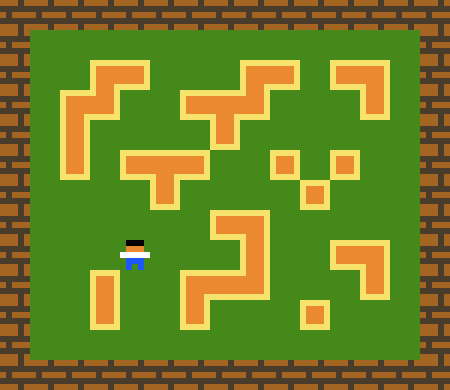
This can be extended to cover multiple players, but you have to back-propagate blockages, so it's a biiit trickier. Here's a sketch if you want to look.
So I'm going to take the above example and push it beyond its limits. Let's say we take the above example but have two characters: a regular player, and a shadow player that moves in the opposite direction.
Edit[ > player ] [ stationary shadow ] -> [ > player ] [ < shadow ]
The problem here is, what happens if you push the same extended body from two directions at once? Well, as you can see, the directions end up fighting with eachother and can't resolve:
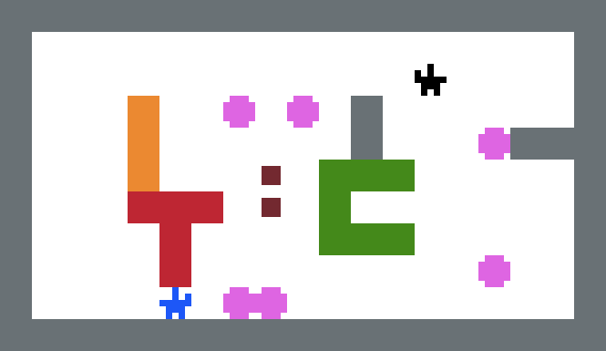
A question you might ask yourself here would be: how would you expect this to resolve anyway? Well, in this case you could detect conflicting movements as obstructions like so in this step 2:
Edit( 2. Propagate obstructions backwards )
[ > Mover | stationary Obstacle ] -> [ stationary Mover | Obstacle ]
(The next lines deal with directional conflicts:)
+ [ ^ Crate | < Crate ] -> [ stationary Crate | stationary Crate ]
+ [ ^ Crate | > Crate ] -> [ stationary Crate | stationary Crate ]
+ [ ^ Crate | v Crate ] -> [ stationary Crate | stationary Crate ]
+ [ v Crate | < Crate ] -> [ stationary Crate | stationary Crate ]
+ [ v Crate | > Crate ] -> [ stationary Crate | stationary Crate ]
+ [ v Crate | ^ Crate ] -> [ stationary Crate | stationary Crate ]
+ [ < Crate | > Crate ] -> [ stationary Crate | stationary Crate ]
+ [ < Crate | ^ Crate ] -> [ stationary Crate | stationary Crate ]
+ [ < Crate | v Crate ] -> [ stationary Crate | stationary Crate ]
+ [ > Crate | < Crate ] -> [ stationary Crate | stationary Crate ]
+ [ > Crate | ^ Crate ] -> [ stationary Crate | stationary Crate ]
+ [ > Crate | v Crate ] -> [ stationary Crate | stationary Crate ]
+ [ > Crate ] [ stationary Crate ] -> [ stationary Crate ] [ Crate ]
+ [ > Box ] [ stationary Box ] -> [ stationary Box ] [ Box ]
+ [ > Chest ] [ stationary Chest ] -> [ stationary Chest ] [ Chest ]
+ [ moving Glue | stationary Glue ] -> [ stationary Glue | Glue ]Which gives us this:
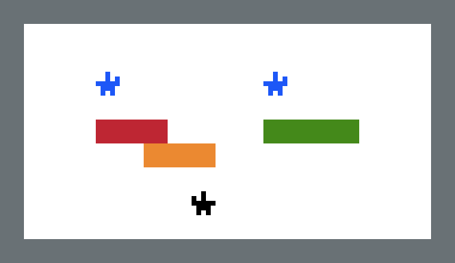
And I might be feeling good about myself, but there's still a lot of ways that movement-resolution might not work out:
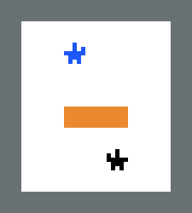
So you throw in this as well to detect when two objects are trying to move together and stick one of them in place:
Edit+ [ > Mover | | < Mover ] -> [ stationary Mover | | < Mover ]This patches up that behaviour quite nicely!
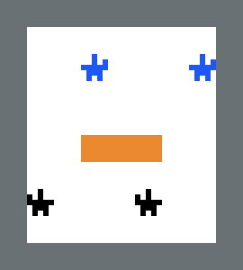
But wait, no what about this:
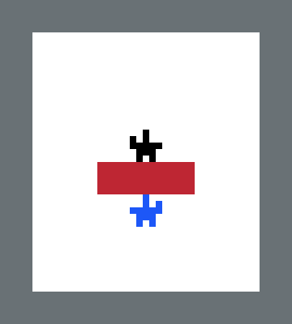
Well that's no good at all.
Anyway, this goes on and on and you can patch things up until the cows come home but ultimately you'll be nervous you're missing something. It's a gigantic and subtle kettle of worms, as I hope I've demonstrated.
So how did I go about trying to help the engine support this in a more robust way? Read on!
Initially I thought the solution would be to add a keyword to objects, to mark them as rigid. However, I later realized that it was far nicer, and cooler, and more in-keeping with the engine, to think of rigidity as something you could apply instead to rules.
Let's just dive in and explain exactly what it is.
(I kinda regret adding this keyword to the engine. However it's in, and I'm going to continue to support it because it's there. However, it's quite complex and idiosyncratic. I'm going to depart from my normal expositional style for this section - the next 'specification' is more technical, and as much for my future reference as for expositional purposes. In the past I was very enthusiastic about this feature, but I can't keep it up - I now know the extents and capabilities of the PuzzleScript language waaay better than I did when I was desinging it in the beginning - many of the reasonably elegant techniques above were just not things I knew how to do when I was first designing the language, whence the heavy-handed and rather mystical RIGID keyword.)
I'm first going to give the technical definition/specification (based on my post-hoc analysis of the code and creation of tests to figure out its semantics), then I'm going to give a high-level explanation of how/why it works, and in the final section I'll show an example of how you might use it.
rigid [ Crate ] -> [ Crate ] Sfx0 will not cause anything to be marked as rigid.rigid [ right Crate ] -> [ Crate ] will not cause anything to be marked as rigid, whereas rigid [ right Crate ] -> [ stationary Crate ] will).I guess the rule-of-thumb is that RIGID applies a tag to a layer when any movement-related stuff is mentioned on the RHS of a rule.
So, if a rigid object would be one where, if one part can't move, no parts can, a RIGID RULE is a RULE where, if anything it tries to move can't move, then its RULE-GROUP doesn't apply at all (the unresolved rigid movement disables the rule-group that caused it for that turn and resimulates the entire turn).
Let's go back to the broken example right at the start:
Edit[ > Player | BigBlock ] -> [ > Player | > BigBlock ]
[ Moving BigBlock | BigBlock ] -> [ Moving BigBlock | Moving BigBlock ]We want that, if any of the BigBlock pieces don't get to move, that whole rule just doesn't apply. Actually, we also don't want the first rule to apply. So what we do is that we group the rules together using the + symbol, and we mark them as rigid
Editrigid [ > Player | BigBlock ] -> [ > Player | > BigBlock ]
+ rigid [ Moving BigBlock | BigBlock ] -> [ Moving BigBlock | Moving BigBlock ]and magically it works
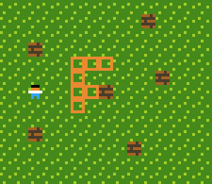
So all's good if you have a single rigid block, but if you try to have blocks pushing other blocks it gets complicated. Let's say you want a big block to collide with little blocks. You end up with stuff like this:
Edit[ > Player | LittleBlock ] -> [ > Player | > LittleBlock ]
[ > LittleBlock | LittleBlock ] -> [ > LittleBlock | > LittleBlock ]
rigid [ > LittleBlock | BigBlock ] -> [ > LittleBlock | > BigBlock ]
+ rigid [ > Player | BigBlock ] -> [ > Player | > BigBlock ]
+ rigid [ moving BigBlock | BigBlock ] -> [ moving BigBlock | moving BigBlock ]
+ [ > BigBlock | LittleBlock ] -> [ > BigBlock | > LittleBlock ]The rule is, anything that adds motion to a BigBlock has to be marked as rigid. Repeating the code twice isn't so bad, really, but if one has more than two block types, there's no compact method of encompassing all the ways that they can interact without maybe introducing one thing that I should mention. We'll need to take a few steps back and look at a simple but related scenario:
Let's try to model two crate types, where crates can push crates.
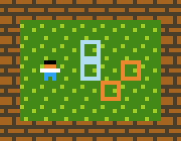
Edit=======
LEGEND
=======
Crate = OrangeCrate or BlueCrate
======
RULES
======
[ > Player | Crate ] -> [ > Player | > Crate ]
[ > Crate | Crate ] -> [ > Crate | > Crate ]
Thich works splendidly. But what if we weren't allowed to refer to the Crate but instead had to refer to them individually, or weren't allowed to combine them together into a rulegroup in the second rule? We could try something like:
Edit[ > Player | Crate ] -> [ > Player | > Crate ]
[ > OrangeCrate | OrangeCrate ] -> [ > OrangeCrate | > OrangeCrate ]
[ > OrangeCrate | BlueCrate ] -> [ > OrangeCrate | > BlueCrate ]
[ > BlueCrate | OrangeCrate ] -> [ > BlueCrate | > OrangeCrate ]
[ > BlueCrate | BlueCrate ] -> [ > BlueCrate | > BlueCrate ]

If only there were some way of looping through these four rules. Well, adding them all to the same rulegroup is one way, but in the case of rigid rules we don't want to cancel the movement of EVERYTHING just because one block can't move (e.g. let's say there's gravity pulling objects down - we don't want one object being prevented from falling to prevent all of them falling) - so we need another layer of loopiness. So, let's introduce STARTLOOP and ENDLOOP:
Edit[ > Player | Crate ] -> [ > Player | > Crate ]
startLoop
[ > OrangeCrate | OrangeCrate ] -> [ > OrangeCrate | > OrangeCrate ]
[ > OrangeCrate | BlueCrate ] -> [ > OrangeCrate | > BlueCrate ]
[ > BlueCrate | OrangeCrate ] -> [ > BlueCrate | > OrangeCrate ]
[ > BlueCrate | BlueCrate ] -> [ > BlueCrate | > BlueCrate ]
endLoop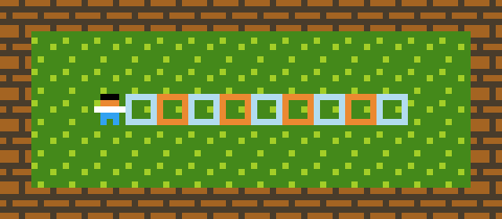
For the above example, this is more or less identical to saying
Edit[ > Player | Crate ] -> [ > Player | > Crate ]
[ > OrangeCrate | OrangeCrate ] -> [ > OrangeCrate | > OrangeCrate ]
+ [ > OrangeCrate | BlueCrate ] -> [ > OrangeCrate | > BlueCrate ]
+ [ > BlueCrate | OrangeCrate ] -> [ > BlueCrate | > OrangeCrate ]
+ [ > BlueCrate | BlueCrate ] -> [ > BlueCrate | > BlueCrate ]However, we don't have this luxury for rigidbodies (Can you tell why not? It's because rigidbodies deactivate entire rule-groups - if our whole game logic is in one giant rule-group we can't selectively delete parts of it). So, with all that said, here's what code for a system with several rigid bodies and some small blocks looks like, thanks to the STARTLOOP and ENDLOOP keywords:
Editstartloop
[ > Player | Smallcrate ] -> [ > Player | > SmallCrate ]
[ > Player | RedCrate ] -> [ > Player | > RedCrate ]
+ rigid [ moving RedCrate | RedCrate ] -> [ moving RedCrate | moving RedCrate ]
+ [ > Crate | RedCrate ] -> [ > Crate | > RedCrate ]
[ > Player | GreenCrate ] -> [ > Player | > GreenCrate ]
+ rigid [ moving GreenCrate | GreenCrate ] -> [ moving GreenCrate | moving GreenCrate ]
+ [ > Crate | GreenCrate ] -> [ > Crate | > GreenCrate ]
[ > Player | BlueCrate ] -> [ > Player | > BlueCrate ]
+ rigid [ moving BlueCrate | BlueCrate ] -> [ moving BlueCrate | moving BlueCrate ]
+ [ > Crate | BlueCrate ] -> [ > Crate | > BlueCrate ]
[ > Crate | SmallCrate ] -> [ > Crate | > SmallCrate ]
endloopAnd this gives us the image at the beginning of this document. It works even if there are multiple player characters moving in multiple directions at a single time:

Anyway, that's it. Thanks for bearing with me through this rather labourious description. Drop me a mail if you noticed I made a mistake anywhere. This material is hairy, so it's very possible there are some errors above.
 PuzzleScript
PuzzleScript